ワットパイロンウア
WatPhaiRongWua/SuphanBuri
泰国地獄四天王之壱
バンコクから北西へ車で1時間強のスパンブリ県の郊外にワットパイロンウアという大きな寺がある。
この寺はタイの地獄愛好家（いるのか？そんなの）の方々の間では有名な寺なので御存じの方も多いかと思う。
タイのコンクリ地獄を語る上で描かせないキング的存在だ。
泰国地獄四天王の一番手なのでタイの仏教事情にも少しふれつつ、ついでに全般的な地獄事情も説明しながら境内を紹介して行こう。
この寺は非常に広い。
境内は中央の道路をはさみ東側は大仏や寝釈迦などがあるエリア、西が地獄エリアとなっている。
多くの人は駐車場がある裏手から入るのだが、ここでは一応正門のある正面入口から順をおって紹介したい。
地獄も気になるが、まずは肩慣らしに大仏エリアに行ってみよう。
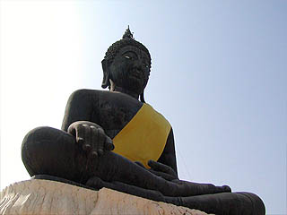
正門を入るといきなり黒い大仏さんがお出迎え。しかしこれはあくまでも序章にすぎない。
本丸はず−っと後ろに控えている。
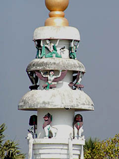 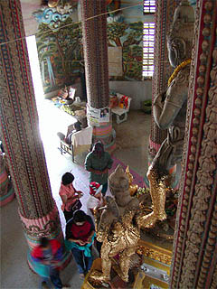
入ってすぐのエリアには幾つか塔が建っているので登ってみる。
中では人々が参拝している。タイではお参りと言えば線香や花をあげるのが基本だが、その他バケツに入った御供物一式セットや金箔、ジャスミンなどの花で作った飾り物（名前は忘れた）などもあげるようだ。仏像の足元が金色なのは金箔が貼られているからだ。
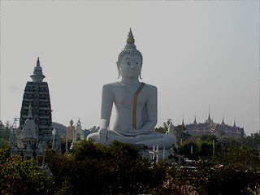
塔の上からの風景。これがワットパイロンウアの全景である。
大仏さんを中心に多くの建物が点在している。大仏のすぐ右には境内を東西に分ける道路が走っており右に見えるお堂はその道路の向こう側ということになる。
大仏に至る途中には様々な仏像が祭られており、中にはこんな人達も。
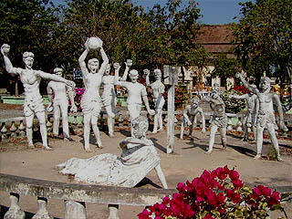 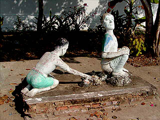
皆に石を投げられている坊さん。全く懲りてない表情が素敵でした。
一方右はウンチ掃除をする人。なめとんのか。お寺の施設じゃなきゃ叩き壊しているトコでした（ウソ）。
でも排泄している人物の堂々とした(態度も量も）排泄っぷりにちょっぴり感動。男らしいぞ！
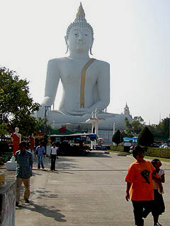 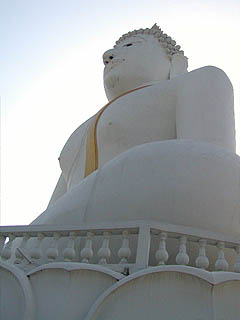
そんなこんなで大仏さんである。最近完成したこの大仏さん、大きさは50メートル以上あり、座像仏ではタイで最大とのことだ。
うむ、確かに大きい。
大きいが、中には入れない。タイの大仏さんはどんなに大きくても精々台座の中に入る位で胎内に入る事は全く想定されてない。
こんなに大きな大仏さんなのに、勿体ないなあ〜
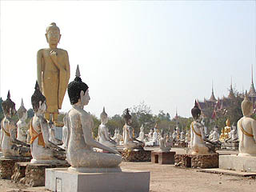
大仏の裏手には不格好な釈迦立像を中心に座像がズラリと並ぶ。
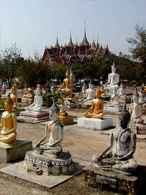 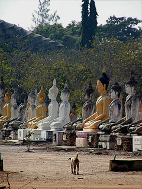
モノはセメントなのだろうが金ペイントしてあるもの、出来たばかりで真っ白なもの、少し汚れて黒ずんでいるものなど様々。
これらの仏像の台座は全て納骨堂になっており、仏像の裏に回ると個人の写真や名前が刻まれていて、線香が手向けられていたりする。
うむ〜。どういう気持ちでこの珍寺構成員のような仏像を終の住処にチョイスしたのだろう？判らん・・・
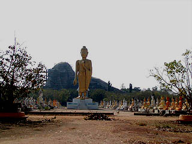 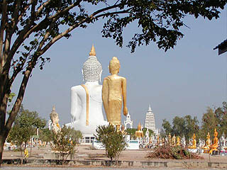
位置確認。仏像群の先にはつくりかけの巨大な寝釈迦像。寝釈迦から正面を見る。寝釈迦、立像、大仏が一直線状に配置されている。
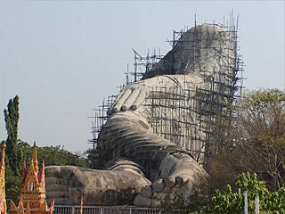 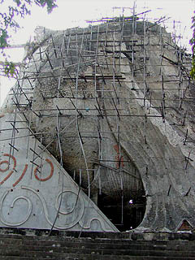
しかし、この寺を紹介するサイトや記事等を見る限りでは頭部までは出来上がっていたのだが。
・・・恐らく取れちゃったんでしょう・・・
建設中とはいうものの中は完全に廃虚状態。再会する様子は現時点ではなさそうだ。
完成していれば長さは100メートル近くになっただろうに、残念である。
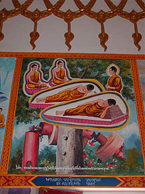
道を渡った本堂らしき建物の中には沢山の仏教説話の絵が描かれていた。
その中の一枚。
タイ語の説明で地球の危機にブッダ一族は子孫をカプセルに入れて宇宙に放ちました、とかいてある（大ウソ）。
さて、大仏エリアを一通り回ったのでいよいよお楽しみの地獄エリアに足を踏み入れよう。
こちらは境内の西側に広がっているエリアで、入口には数多くの屋台が出店しており、一日中楽しめる。ただし楽しむことが出来れば、だが。
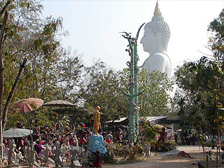
エリア内に入るともう収集がつかないほどのゴッチャゴチャ血みどろスプラッタ状態。
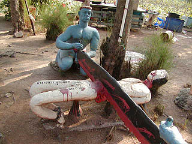 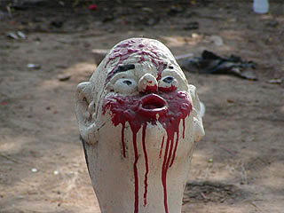
早速始まってます。地獄の責め苦パーティー。ノコギリで腹を曵かれるのも可哀想だが、一番可哀想なのは場所が臭い便所の前であると言う事。
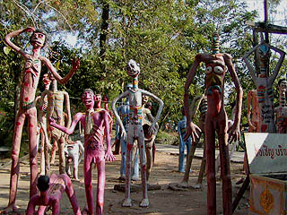 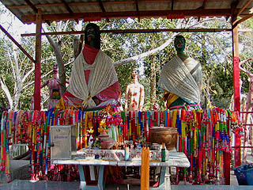
やけに背がのびちゃった人達。ふざけた色使い、ふざけた造形。全てにおいてふざけている。
もっと真面目にやれ！などというのは野暮、ギラついた日射しの中に立ち尽くすハッピーかつグロテスクな地獄の住人は一種感動的ですらある。
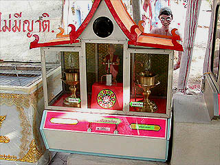
一画にあった自動おみくじ機。コインを投入すると中央の人形がポンプを上下に動かし、ルーレットが回る。
この占い機はタイプは様々だがタイのお寺では結構みかけるもので、出た数字の書いてある紙を取り出し吉凶を占うというもの。
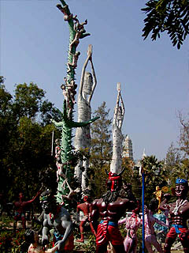 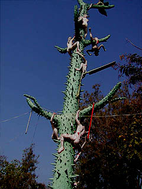
地獄エリアの中で一際目立つのはトゲトゲの木に登る亡者。痛そうですねえ〜。
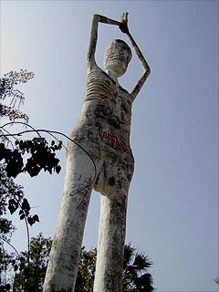 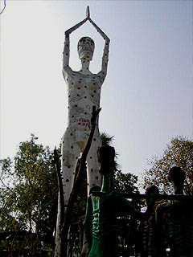
そしてもう一つのモニュメントは男女対の巨像。10メートルはあろうか。
このトゲトゲ木と男女の巨像はタイ地獄業界ではお約束の品らしくて、この後訪れた地獄でも良く見かけた。
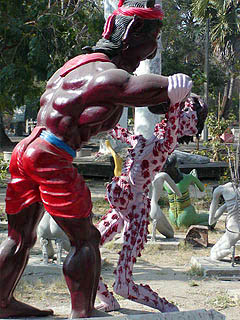 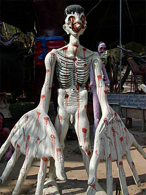 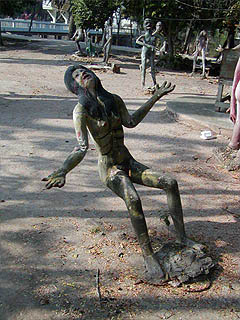
全身イボイボ地獄、手が大きくなちゃった地獄、空気椅子地獄。
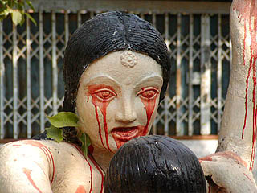
もう涙も出まへんわっ！
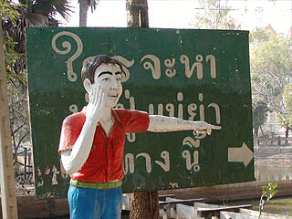
「ハーイ、ご飯の時間ですよ〜」
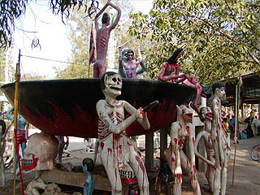
地獄の釜料理。関係ないがタイではタイスキという鍋料理が大人気。
暑いのにもかかわらず魚でも肉でも海老でも闇鍋みたいに何でも放り込んでチリソースで味の統一をはかって食べている。
これが結構美味しいです。ちなみに美味しいはアローイという。
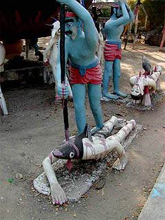
タイではナマズはプラードゥックという。で、ナマズの辛子炒めはプラードゥック・パッ・ペッ。アローイ。
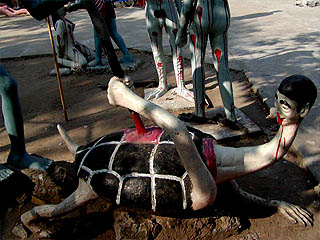
亀。アローイ、アローイ。
そう言えばタイではカブトガニも食す。海鮮料理店の店先の焼き場で見た時はエイリアン焼いてるのかと思いました・・・
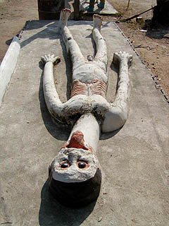 イキの悪い刺身。
そんなこんなで地獄の奥にも立派なお堂がある。
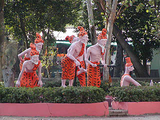 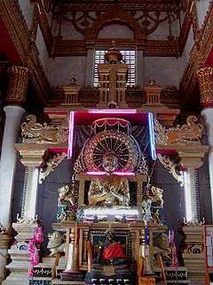
中にはミャンマーやベトナムの寺と比べると若干控えめな電色光背が。
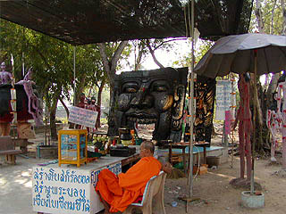 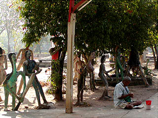
園内の住人。
左、ふざけたオブジェの真ん前に陣取り、たまにマイクを握り説教やお経を唸っている坊さん。
右、地獄の片隅に座るお貰いさん。生きるも地獄死ぬも地獄、という事か。
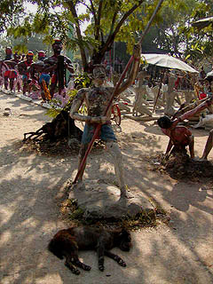 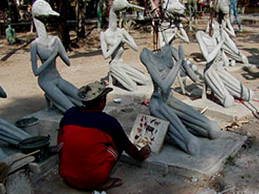
地獄の毒気に当てられて失神した犬（生きてます）。
今日も明日も地獄作り、御苦労さまです。あ、図鑑見て作ってら・・・
次は世界遺産だ！
泰国超絶地獄列伝
珍寺大道場 HOME